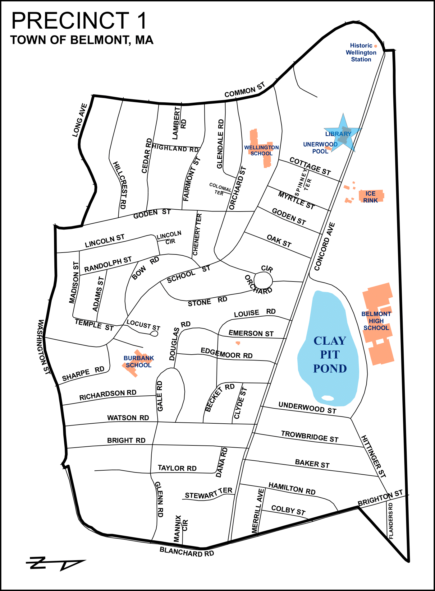
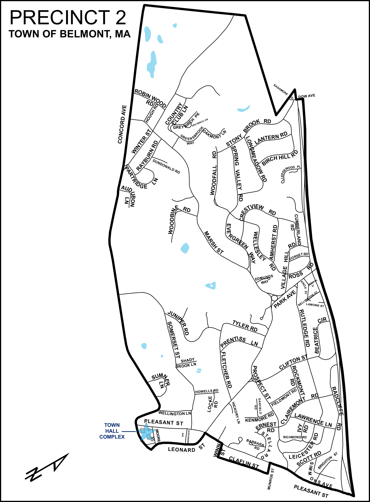
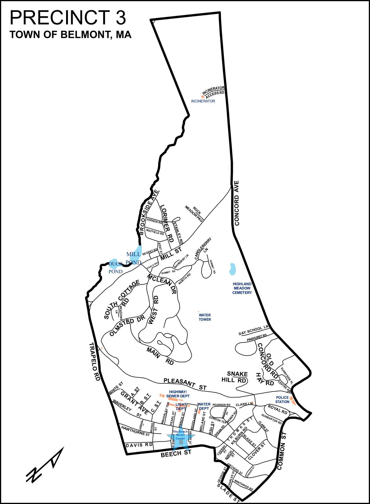
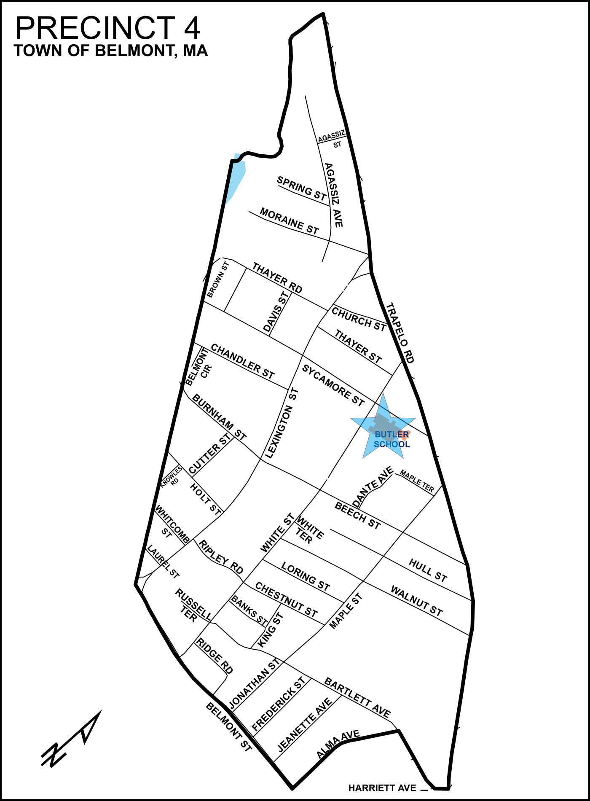
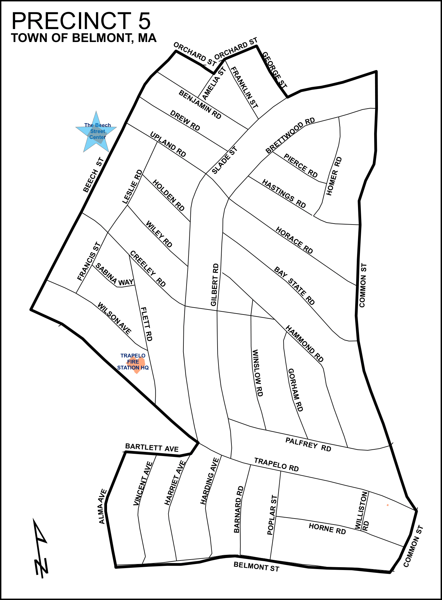
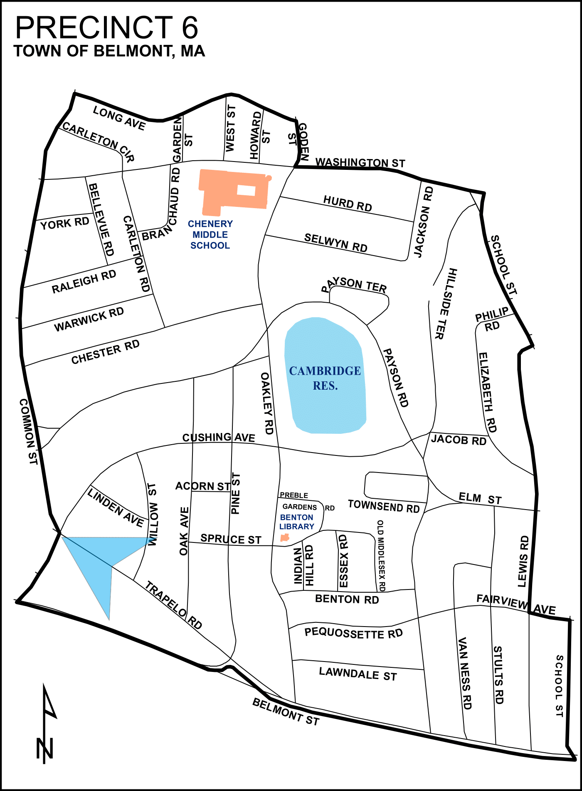
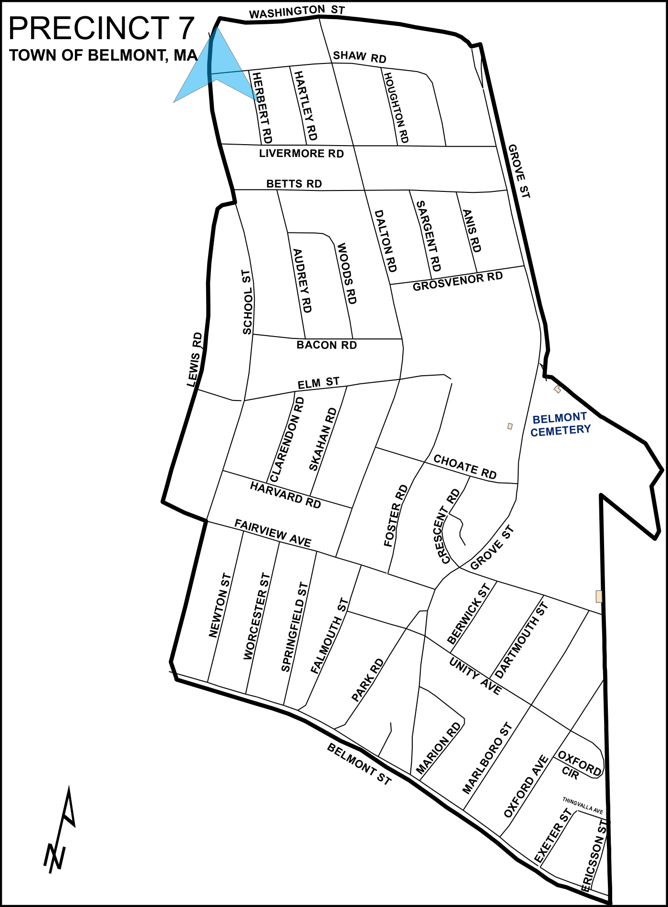
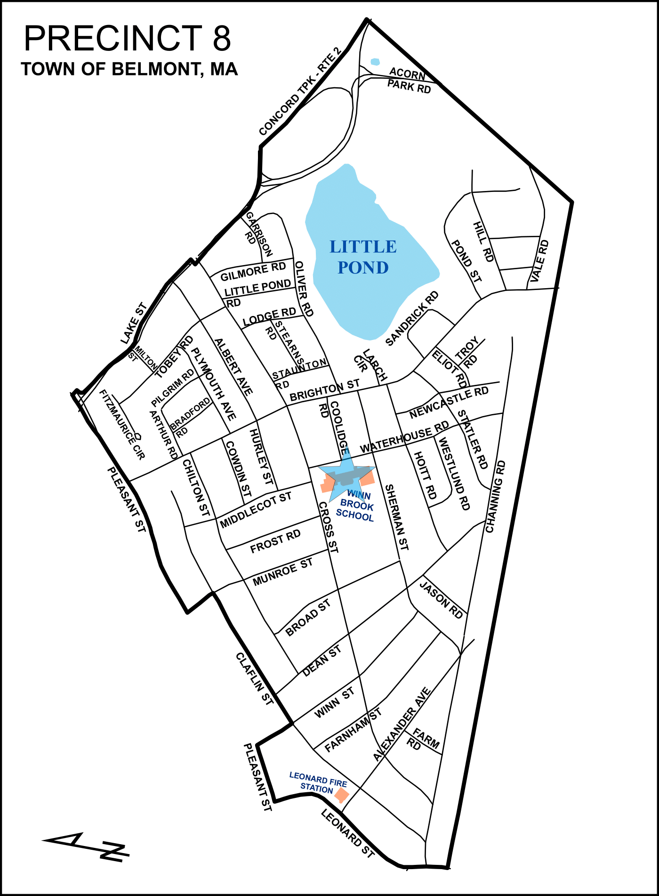

Your polling location is in the Belmont Public Library Assembly Room, at 336 Concord Avenue.

Your polling location is in the Belmont Town Hall Selectmen's Meeting Room, at 455 Concord Avenue.

Your polling location is in the Beech Street Center, at 266 Beech Street.

Your polling location is in the Daniel Butler School, at 90 White Street.

Your polling location is in the Beech Street Center, at 266 Beech Street.

Your polling location is in the Belmont Fire Headquarters, at 299 Trapelo Road.

Your polling location is in the Burbank School Gym, at 266 School Street.

Your polling location is in the Winn Brook School Gym, at 97 Waterhouse Street. Note: you must enter through the Cross Street entrance.
